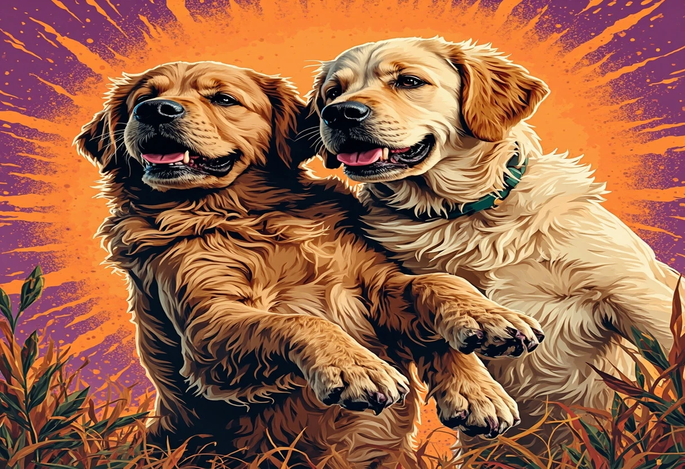
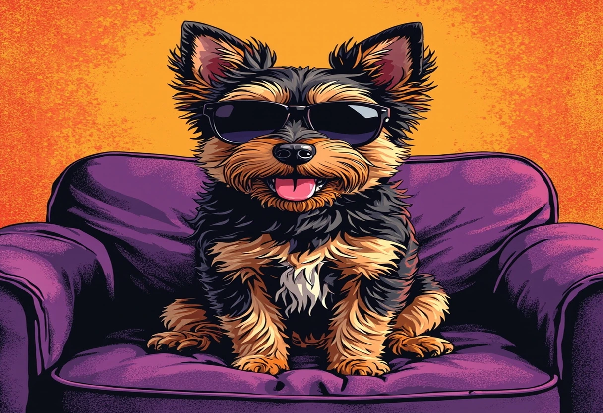

Du möchtest Dir einen Hund anschaffen, bist aber unsicher, welche Rasse zu Dir passt? Das ist eine der häufigsten Fragen, die sich zukünftige Hundebesitzer stellen – und das völlig zu Recht. Denn die Wahl der richtigen Hunderasse ist eine der wichtigsten Entscheidungen, die Du als Hundehaltung-Einsteiger treffen wirst. Sie beeinflusst nicht nur die nächsten 10 bis 15 Jahre Deines Lebens, sondern maßgeblich auch das Wohlbefinden Deines neuen vierbeinigen Mitbewohners.
Jedes Jahr entscheiden sich in Deutschland über 300.000 Menschen für einen Hund. Viele unterschätzen jedoch, wie unterschiedlich die verschiedenen Rassen in Bezug auf Temperament, Bewegungsbedarf, Pflegeaufwand und Erziehbarkeit sind. Ein Border Collie ohne Auslastung kann zur Zerreißprobe werden, während ein Mops in der falschen Umgebung gesundheitliche Probleme entwickeln kann. Die gute Nachricht: Mit der richtigen Vorbereitung und einer ehrlichen Selbsteinschätzung findest Du garantiert den Hund, der perfekt zu Deinem Lebensstil passt.
In diesem umfassenden Ratgeber stellen wir Dir die 8 beliebtesten Hunderassen für Anfänger detailliert vor, zeigen Dir eine übersichtliche Vergleichstabelle und geben Dir einen 5-Punkte-Fragenkatalog an die Hand, mit dem Du Deine persönliche Traumrasse systematisch eingrenzen kannst. Egal ob Du in der Stadt wohnst oder auf dem Land, eine Familie hast oder allein lebst – hier findest Du alle Informationen, die Du brauchst, um die richtige Wahl zu treffen. Los geht's!
Die 5 wichtigsten Fragen vor der Rassewahl
Bevor Du Dich in die Details einzelner Rassen vertiefst, solltest Du Dir über einige grundlegende Fragen im Klaren sein. Denn die Entscheidung für eine Hunderasse sollte nicht nur nach Optik oder „weil ich den schon als Kind toll fand“ getroffen werden. Beantworte Dir ehrlich die folgenden fünf Fragen – sie sind der Schlüssel zu einer glücklichen Mensch-Hund-Beziehung.
1. Wie viel Platz kannst Du Deinem Hund bieten?
Die Wohnsituation ist einer der entscheidendsten Faktoren bei der Rassewahl. Lebst Du in einer 45-Quadratmeter-Stadtwohnung im dritten Stock ohne Aufzug? Dann ist ein ausgewachsener Labrador oder ein Australien Shepherd, der sich täglich austoben muss, wahrscheinlich nicht die beste Wahl. Das bedeutet aber nicht, dass Du in der Wohnung auf einen Hund verzichten musst – viele kleine bis mittelgroße Rassen wie der Havaneser, die Französische Bulldogge oder der Mops fühlen sich auch in kleineren Wohnungen pudelwohl, solange sie regelmäßig Auslauf bekommen.
Wichtig zu verstehen: Ein Haus mit Garten ist bequem, aber kein Muss. Die meisten Hunde nutzen den Garten ohnehin eher als erweiterten Wohnraum und weniger als Sportplatz. Entscheidend sind die täglichen Spaziergänge und die Qualität der gemeinsamen Zeit – nicht die Quadratmeterzahl der Wohnung.
2. Wie viel Zeit kannst Du investieren?
Ein Hund bedeutet tägliche Verantwortung, und zwar 365 Tage im Jahr. Neben den offensichtlichen Gassirunden (mindestens 3-mal täglich, je nach Rasse 1 bis 3 Stunden insgesamt) kommt noch Zeit für Fellpflege, gemeinsames Spielen, Erziehung, Futterzubereitung und Tierarztbesuche hinzu. Ein Border Collie oder Australian Shepherd benötigt nicht nur körperliche, sondern auch geistige Auslastung – sonst sucht er sich selbst Beschäftigung, und die gefällt Dir meistens nicht (zerstörte Möbel, übermäßiges Bellen, Buddeln).
Wenn Du beruflich stark eingespannt bist, solltest Du entweder eine pflegeleichte, ruhigere Rasse wählen oder einen Hund aus dem Tierheim, dessen Wesen bereits gut einschätzbar ist. Bedenke auch: Welpen brauchen in den ersten Monaten rund um die Uhr Betreuung – wer bringt den Vierbeiner raus, wenn Du im Büro bist?
3. Hattest Du bereits Erfahrung mit Hunden?
Dein Erfahrungslevel ist ein wichtiger Faktor. Als blutiger Anfänger solltest Du zu Rassen greifen, die für ihre Lernbereitschaft, Geduld und Vergebungsbereitschaft bekannt sind. Klassische Anfängerhunde sind Labrador, Golden Retriever, Havaneser und gutmütige Mischlinge. Deutsche Schäferhunde, Border Collies, Australian Shepherds oder Jack Russell Terrier gelten dagegen als anspruchsvoller – sie brauchen eine konsequente, erfahrene Führung und sind mit falscher Erziehung schnell überfordert.
Das bedeutet nicht, dass Du mit der Traumrasse „Dein Glück nicht versuchen sollst“. Aber sei bereit, Zeit in Hundeschule, Erziehungskurse und eventuell einen Hundetrainer zu investieren. Ein Anfänger-Fehler ist es, die Komplexität einer Rasse zu unterschätzen, nur weil der Welpe so niedlich aussieht.
4. Hast Du die finanzielle Verantwortung bedacht?
Ein Hund kostet Geld – und zwar nicht zu knapp. Die monatlichen Kosten für einen Hund belaufen sich in Deutschland durchschnittlich auf 80 bis 200 Euro, je nach Größe, Futterqualität und Gesundheitszustand. Hier die wichtigsten Posten:
- Futter: 30–80 € pro Monat bei hochwertigem Nass- oder Trockenfutter
- Tierarzt: Impfungen, Wurmkuren, Vorsorge ~30–50 € monatlich (umgelegt); Notfälle schnell 500–2000 € extra
- Hundesteuer: je nach Gemeinde 50–200 € jährlich
- Haftpflichtversicherung: 50–100 € jährlich (Pflicht in vielen Bundesländern!)
- Krankenversicherung: optional 25–60 € pro Monat
- Zubehör: Leinen, Näpfe, Körbchen, Spielzeug – einmalig 100–300 €
- Hundeschule: 150–400 € für einen Grundkurs
- Hundesitter/Pension: bei Urlaub 25–50 € pro Tag
Große Hunde fressen mehr, benötigen höhere Medikamentendosen und verursachen oft höhere Tierarztkosten. Kleine Hunde leben dafür länger – auch das solltest Du bedenken.
5. Passt ein Hund zu Deinem Familienleben?
Hast Du Kinder? Lebst Du mit anderen Haustieren zusammen (Katzen, Kaninchen, Meerschweinchen)? Bist Du viel unterwegs oder reist Du gerne? Ein Hund sollte in Dein Leben integrierbar sein, ohne dass er zum Stressfaktor wird. Manche Rassen wie der Golden Retriever sind für ihre Kinderfreundlichkeit berühmt, während andere Rassen wie der Australian Shepherd eher zu Hüteverhalten neigen und kleine Kinder dabei unbeabsichtigt umrennen oder „hüten“ können.
Auch die Urlaubsplanung wird mit Hund aufwendiger. Nicht alle Vermieter erlauben Hunde, nicht jedes Hotel ist hundefreundlich, und die Reise im Zug oder Flugzeug will gut geplant sein. Überlege Dir, ob Du bereit bist, Deine Urlaubsgewohnheiten anzupassen – oder ob Du einen Hundesitter oder eine Pension für die Ferienzeit einplanen kannst.
📢 Google AdSense
Anzeige
🏆 Die 8 besten Hunderassen für Anfänger im Porträt
Jetzt wird es konkret! Wir stellen Dir die acht beliebtesten und am besten geeigneten Hunderassen für Anfänger vor. Jede Rasse wird ausführlich mit Charakter, Pflegeaufwand, Bewegungsbedarf und Eignung für verschiedene Lebenssituationen beschrieben.
🐕 Labrador Retriever – Der Allrounder für fast jede Familie
Der Labrador Retriever ist seit Jahren die beliebteste Hunderasse in Deutschland – und das aus gutem Grund. Labradore gelten als der Inbegriff des Familienhundes: freundlich, geduldig, verspielt und unkompliziert. Sie sind bekannt für ihr ausgeglichenes Temperament und ihre fast grenzenlose Gutmütigkeit, die sie zu perfekten Begleitern für Familien mit Kindern machen.
Charakter: Labradore sind extrem menschenbezogen, intelligent und lernwillig. Sie wollen es jedem recht machen und sind daher sehr gut erziehbar – perfekt für Anfänger. Ihre berühmte „Weichmaul“-Veranlagung (sie tragen Gegenstände sanft im Maul) macht sie zu begeisterten Apportierhunden. Allerdings haben Labradore einen unstillbaren Appetit. Sie neigen stark zu Übergewicht, wenn Du ihre Futterrationen nicht streng kontrollierst. Ein Labrador denkt immer an Futter – immer.
Pflege: Der Labrador besitzt ein kurzes, dichtes Fell mit dichter Unterwolle. Er haart ganzjährig mäßig und zweimal im Jahr stark (Fellwechsel). Regelmäßiges Bürsten (2–3 Mal pro Woche) ist Pflicht, sonst hast Du überall Haare. Die Pflege ist ansonsten unkompliziert: Ohren regelmäßig kontrollieren, Krallen kürzen, fertig.
Bewegungsbedarf: Labradore sind aktive Hunde mit einem hohen Bewegungsdrang. Sie brauchen mindestens 1–2 Stunden Bewegung pro Tag – und zwar nicht nur Gassi um den Block, sondern richtige Aktivität: Schwimmen (Labradore lieben Wasser!), Apportierspiele, ausgedehnte Wanderungen. Wer einen Labrador nur im Stadtpark Gassi führt, wird einen unzufriedenen Hund bekommen. Gut ausgelastet sind sie aber ausgeglichene Stubenhocker.
Eignung für Anfänger: Sehr gut geeignet. Labradore sind verzeihend, lernfreudig und nicht übermäßig dominant. Sie eignen sich für Familien, aktive Singles und Paare. Weniger geeignet für Menschen, die wenig Zeit haben oder eine ruhige, zurückgezogene Rasse suchen.
🐕 Golden Retriever – Der sanfte Familienfreund
Eng verwandt mit dem Labrador, aber mit einigen charakteristischen Unterschieden: Der Golden Retriever ist vielleicht noch sanftmütiger, noch geduldiger – und noch haariger. Golden Retriever sind für ihr seidiges, goldfarbenes Fell und ihr freundliches Wesen weltberühmt. Sie gelten als die perfekten Familienhunde schlechthin.
Charakter: Goldens sind intelligente, sensible und unermüdlich freundliche Hunde. Sie wollen gefallen und sind daher äußerst kooperativ in der Erziehung. Anders als manche anderen Rassen zeigen sie selten bis nie Aggressionen – ein Golden Retriever, der bellt oder knurrt, ist die absolute Ausnahme. Diese Sanftmut macht sie zu idealen Therapie- und Assistenzhunden. Ihr größter Wunsch ist es, bei ihrer Familie zu sein. Alleinsein müssen sie langsam lernen, sonst kann es zu Trennungsangst kommen.
Pflege: Das dichte, seidige Fell mit Unterwolle benötigt regelmäßige Pflege. Mindestens 2–3 Mal pro Woche bürsten, während des Fellwechsels täglich. Goldens haaren stark – wer auf Sauberkeit im Haus großen Wert legt, sollte zu einer anderen Rasse greifen oder sich mit Staubsauger und Fusselrolle anfreunden. Die langen Ohren neigen zu Entzündungen und sollten wöchentlich kontrolliert werden.
Bewegungsbedarf: Ähnlich wie der Labrador benötigt der Golden Retriever 1–2 Stunden aktive Bewegung täglich. Er liebt Wasser, Apportierspiele und lange Spaziergänge in der Natur. Goldens sind auch im Erwachsenenalter noch verspielt und behalten sich eine gewisse Welpenhaftigkeit – das macht sie charmant, erfordert aber auch konsequente Auslastung.
Eignung für Anfänger: Ideal. Die freundliche, kooperative Art und die hohe Lernbereitschaft machen den Golden Retriever zu einer der besten Hunderassen für Anfänger überhaupt. Perfekt für Familien mit Kindern, auch für ältere Menschen geeignet, solange die täglichen Spaziergänge möglich sind. Nicht empfehlenswert für Menschen, die viel außer Haus sind.

🛒 Zubehör für Retriever auf Amazon.de
Apportierspielzeuge, wasserdichte Leinen, Pflegebürsten und mehr für Labrador & Golden Retriever. (Affiliate-Link)
🐕 Französische Bulldogge – Der charmante Stadtbegleiter
Die Französische Bulldogge – liebevoll „Französische“ oder „Frenchie“ genannt – ist der unangefochtene Star unter den Stadthunden. Mit ihren großen Fledermausohren, dem platten Gesicht und dem kompakten Körper erobert sie die Herzen im Sturm. Seit einigen Jahren gehört sie zu den beliebtesten Hunderassen in deutschen Großstädten.
Charakter: Französische Bulldoggen sind verspielt, neugierig und anhänglich. Sie haben einen ausgeprägten eigenen Kopf, sind aber gleichzeitig sehr menschenbezogen. Frenchie-Besitzer nennen sie oft „Komiker“ – sie haben eine ausgeprägte Persönlichkeit und eine lustige Art, sich auszudrücken. Anders als Labrador oder Golden Retriever sind sie keine „Arbeitshunde“ und brauchen weniger Auslastung. Ihr Bewegungsdrang ist moderat, was sie zu idealen Begleitern für Wohnungsbewohner macht.
Gesundheit und Pflege: Dieser Punkt erfordert besondere Aufmerksamkeit. Französische Bulldoggen gehören zu den brachycephalen (kurzköpfigen) Rassen, was bedeutet, dass sie eine flache Schnauze haben. Das führt leider häufig zu Atemwegsproblemen – sie schnarchen, keuchen und vertragen Hitze extrem schlecht. Verantwortungsvolle Züchter legen Wert auf Gesundheit, dennoch solltest Du Dich auf mögliche Tierarztkosten einstellen. Das kurze Fell ist pflegeleicht (1× pro Woche bürsten), aber die Hautfalten im Gesicht müssen regelmäßig gereinigt werden.
Bewegungsbedarf: Gering bis moderat. 30–60 Minuten gemütliche Spaziergänge pro Tag reichen völlig aus. Intensive körperliche Aktivität bei Hitze ist nicht empfehlenswert und kann gefährlich werden. Französische Bulldoggen sind ideale Begleiter für Spaziergänge im Schatten, aber keine Joggingpartner.
Eignung für Anfänger: Gut geeignet, aber mit Vorbehalten. Die Pflege ist einfach, der Bewegungsbedarf gering, und sie sind sehr anpassungsfähig. Die Herausforderung liegt in den gesundheitlichen Risiken – wähle einen seriösen Züchter, der Gesundheit über extreme Rassemerkmale stellt. Auch die Erziehung erfordert etwas mehr Geduld, da Französische Bulldoggen einen eigenen Kopf haben. Für entspannte Stadtbewohner, Familien mit älteren Kindern und Paare ideal.
🐕 Mops – Der gemütliche Geselle mit großem Herz
Der Mops ist die wohl urtümlichste aller Gesellschaftshunderassen und ein absoluter Klassiker unter den Anfängerhunden. Mit seinem runzeligen Gesicht, den Kulleraugen und der aufgedrehten Rute bringt er Menschen seit Jahrhunderten zum Schmunzeln. Der Mops ist kein Sportler, sondern ein Lebenskünstler – sein Motto lautet: Genießen und Geliebtwerden.
Charakter: Möpse sind liebevoll, verspielt (wenn auch in Maßen) und ausgesprochen menschenbezogen. Sie haben ein sanftes, freundliches Wesen und sind bekannt für ihre Geduld mit Kindern. Sie sind keine Kläffer (was Nachbarn freut) und passen sich erstaunlich gut an den Lebensrhythmus ihrer Besitzer an. Was ihnen fehlt, ist ein ausgeprägter Gehorsamstrieb – Möpse machen das, wozu sie Lust haben, und lassen sich nur mit positiver Verstärkung zur Kooperation bewegen.
Gesundheit und Pflege: Wie die Französische Bulldogge ist auch der Mops brachycephal. Atemprobleme, Überhitzung und Hautfaltenentzündungen sind leider rassetypische Probleme. Die charakteristischen Falten im Gesicht müssen täglich gereinigt und trocken gehalten werden, sonst entstehen Hautekzeme. Das kurze Fell ist pflegeleicht, haart aber mehr, als man denkt. Achtung: Möpse neigen extrem zu Übergewicht! Ein dicker Mops ist kein gesunder Mops – kontrolliere die Futtermenge streng.
Bewegungsbedarf: Gering. 30–45 Minuten gemächliches Spazierengehen pro Tag reichen einem Mops völlig. Bei Hitze oder Kälte sind die Spaziergänge noch kürzer. Möpse sind hervorragende Couch-Begleiter und machen auch bei Regenwetter keine großen Probleme – sie sind gern drinnen, solange Du bei ihnen bist.
Eignung für Anfänger: Sehr gut, wenn Du die gesundheitlichen Risiken und die besondere Pflege der Hautfalten akzeptierst. Der Mops ist der ideale Ersthund für ruhigere Menschen, Senioren, Stadtbewohner und Familien, die keinen Jagd- oder Hütehund suchen. Weniger geeignet für sportliche Menschen, die einen aktiven Begleiter für Wanderungen oder Joggingrunden suchen.
📢 Google AdSense
Anzeige
🐕 Havaneser – Der fröhliche Familienhund mit Lockenfell
Der Havaneser ist ein kleiner, fröhlicher Gesellschaftshund aus der Familie der Bichons, der ursprünglich aus Kuba stammt. Mit seinem seidigen Lockenfell, den dunklen Knopfaugen und seinem lebhaften Wesen erobert er schnell die Herzen. Er gehört zu den sogenannten „Begleithunden“ und wurde speziell dafür gezüchtet, dem Menschen Gesellschaft zu leisten.
Charakter: Havaneser sind intelligent, aufmerksam und ausgesprochen verspielt. Sie lieben es, im Mittelpunkt zu stehen und ihre Menschen zu unterhalten. Anders als viele kleine Hunde sind sie keine Kläffer – sie bellen zwar, aber meist kontrolliert und situationsbezogen. Sie sind sehr lernwillig und freuen sich über Trick-Training, das sie geistig auslastet. Ihr größtes Bedürfnis ist Nähe: Havaneser wollen überall dabei sein und sind keine Hunde für den Zwinger oder stundenlanges Alleinsein.
Pflege: Hier liegt der größte Aufwand. Das seidige, gewellte Fell des Havanesers verfilzt schnell, wenn es nicht täglich gebürstet wird. Regelmäßiges Trimmen oder Scheren beim Hundefriseur (alle 6–8 Wochen) ist Pflicht. Dafür haaren Havaneser kaum – sie sind eine der besten Rassen für Allergiker! Die Pflege ist aufwendig, aber die Mühe lohnt sich, denn das Fell ist wunderschön.
Bewegungsbedarf: Gering bis moderat. 45–60 Minuten Spaziergang pro Tag reichen völlig. Havaneser passen sich gut an das Tempo ihrer Besitzer an. Sie lieben Spiele und kleine Agility-Übungen, brauchen aber keine ausgedehnten Wanderungen. Perfekt für Stadtwohnungen.
Eignung für Anfänger: Sehr gut. Der Havaneser ist pflegeleicht im Charakter, intelligent und anpassungsfähig. Die Fellpflege erfordert Disziplin, aber das ist der einzige „Haken“. Ideal für Familien mit Kindern (durch seine Größe nicht einschüchternd), Senioren, Wohnungsbewohner und Allergiker. Weniger geeignet für Menschen, die keine Zeit für regelmäßige Fellpflege haben oder einen „robusten“ Hund suchen.
🐕 Australian Shepherd – Der intelligente Sportskanone
Der Australian Shepherd – kurz „Aussie“ – ist kein klassischer Anfängerhund, aber wir führen ihn auf, weil er von aktiven Einsteigern oft ins Auge gefasst wird und mit der richtigen Vorbereitung durchaus machbar ist. Der Aussie ist ein Hütehund durch und durch: hochintelligent, arbeitswillig und energiegeladen. Er wurde gezüchtet, um den ganzen Tag über Schafe zu hüten – und genau dieses Arbeitsbedürfnis steckt tief in ihm.
Charakter: Australian Shepherds sind extrem intelligent (oft als eine der klügsten Rassen eingestuft), lernwillig und menschenbezogen. Sie entwickeln eine enge Bindung zu „ihrem“ Menschen und sind unermüdlich darin, zu gefallen. Diese Eigenschaften machen sie zu fantastischen Begleitern – aber auch zu einer Herausforderung. Ein unterforderter Aussie entwickelt schnell Verhaltensprobleme: exzessives Bellen, Jagen, Buddeln, Zerstörung. Wer keine 2–3 Stunden pro Tag in Auslastung investieren kann, sollte von dieser Rasse Abstand nehmen.
Pflege: Das mittellange Fell mit dichter Unterwolle benötigt 2–3 Mal pro Woche Bürsten, während des Fellwechsels täglich. Der Pflegeaufwand ist moderat, aber das Haaren ist enorm – Aussies hinterlassen überall Fell. Dazu kommt der typische „Hunde- Geruch“, der bei nassem Fell intensiver wird.
Bewegungsbedarf: Sehr hoch. Mindestens 2 Stunden aktive Bewegung täglich, plus geistige Auslastung (Suchspiele, Agility, Trickdog, Hütearbeit, Hundesport). Ein Australian Shepherd ist kein Spaziergänger – er braucht einen Job. Wer gerne joggt, wandert, Rad fährt oder Hundesport betreibt, findet im Aussie den perfekten Partner.
Eignung für Anfänger: Bedingt geeignet. Wir empfehlen den Aussie nur für überdurchschnittlich aktive Anfänger, die bereit sind, sich intensiv mit Hundeerziehung und -auslastung zu beschäftigen. Wer einen ruhigen Familienhund sucht, ist mit einem Labrador oder Golden Retriever besser beraten. Der Aussie ist die richtige Wahl für sportliche Menschen, die ihren Hund in alle Aktivitäten einbeziehen wollen.
🐕 Border Collie – Der Hochleistungsdenker
Der Border Collie gilt als der intelligenteste Hund der Welt – und als der anspruchsvollste. Diese Rasse ist der Formel-1-Wagen unter den Hunden: leistungsstark, hochgezüchtet und nichts für Anfänger, die nur mal „spazieren gehen“ wollen. Dennoch nennen wir ihn hier, weil er von Anfängern oft wegen seiner Schönheit und Intelligenz gewählt wird – leider mit traurigen Folgen, wenn die Erwartungen nicht zur Realität passen.
Charakter: Border Collies sind extrem intelligent, lernfähig und haben einen nahezu unstillbaren Arbeitswillen. Sie können hunderte Kommandos lernen und sind Meister darin, mit ihrem Menschen zu kommunizieren. Ihr Hüteinstinkt ist tief verwurzelt – sie hüten alles, was sich bewegt: Kinder, Autos, Jogger, andere Tiere. Das kann im Alltag zu Konflikten führen, wenn nicht konsequent gearbeitet wird. Border Collies sind sensible Hunde, die auf Härte oder Ungeduld empfindlich reagieren – sie brauchen eine einfühlsame, aber konsequente Führung.
Pflege: Das dichte Fell (es gibt Kurz- und Langhaarvarianten) benötigt regelmäßiges Bürsten, etwa 2–3 Mal pro Woche. Während des Fellwechsels täglich. Die Pflege ist moderat aufwendig, das Haaren intensiv.
Bewegungsbedarf: Extrem hoch. Border Collies brauchen nicht nur körperliche, sondern vor allem geistige Auslastung. Ein müder Border Collie ist kein laufender Border Collie, sondern ein denkender Border Collie: Suchspiele, Hunde-Freestyle, Agility, Obedience, Tricktraining sind Pflichtprogramm. Ohne Beschäftigung werden sie zu Problemhunden. Ein Border Collie kann stundenlang laufen – und trotzdem nicht ausgelastet sein, wenn der Kopf nicht gefordert wird.
Eignung für Anfänger: Nicht empfehlenswert für Einsteiger ohne Hundeerfahrung. Der Border Collie ist eine der anspruchsvollsten Rassen überhaupt und erfordert viel Zeit, Wissen und Engagement. Nur für erfahrene Hundehalter oder absolute Überzeugungstäter mit intensiver Trainer-Unterstützung geeignet. Wir empfehlen dringend, einen Border Collie erst als Zweit- oder Dritthund zu wählen.

🐕 Cocker Spaniel – Der fröhliche Wirbelwind mit Samtpfoten
Der Cocker Spaniel ist ein mittelgroßer Jagdhund mit einem Herz aus Gold. Er vereint die Freundlichkeit eines Familienhundes mit dem Eifer eines Jagdhundes – eine spannende Kombination, die für den richtigen Halter perfekt aufgeht. Der Cocker Spaniel ist bekannt für sein seidenweiches Fell, die großen, samtigen Hängeohren und seine ausgelassene Fröhlichkeit.
Charakter: Cocker Spaniels sind anschmiegsame, sensible und fröhliche Hunde. Sie haben ein ausgeprägtes Bedürfnis nach Nähe und möchten am liebsten immer in der Nähe ihrer Menschen sein. Sie sind intelligent und lernwillig, aber auch ein bisschen eigenwillig – sie können durchaus entscheiden, ob sie gerade Lust auf Gehorsam haben. Der Jagdtrieb ist bei vielen Cockern ausgeprägt: Vögel, Eichhörnchen und andere Kleintiere können zur großen Versuchung werden. Die Erziehung sollte daher frühzeitig Jagdvermeidungstraining beinhalten.
Pflege: Das lange, seidige Fell benötigt viel Pflege. Tägliches Bürsten ist empfehlenswert, ein regelmäßiger Termin beim Hundefriseur (alle 6–8 Wochen) ist Pflicht. Die langen Hängeohren neigen zu Entzündungen und müssen wöchentlich kontrolliert und gereinigt werden. Viele Cocker Spaniel-Besitzer scheren das Fell im Sommer kurz – das reduziert den Pflegeaufwand erheblich.
Bewegungsbedarf: Mittel bis hoch. 1–1,5 Stunden Bewegung täglich sind ideal. Cocker lieben ausgedehnte Spaziergänge, bei denen sie schnüffeln und erkunden können. Sie sind gute Schwimmer und freuen sich über Apportierspiele. Der Jagdhund kommt in ihnen hoch, wenn sie eine Fährte aufnehmen – also immer gut sichern.
Eignung für Anfänger: Gut geeignet für Anfänger, die bereit sind, Zeit in Fellpflege und eine konsequente Erziehung (insbesondere Jagdvermeidung) zu investieren. Der Cocker Spaniel ist ein wunderbarer Familienhund, der mit seiner fröhlichen Art alle verzaubert. Er passt in Familien, zu aktiven Senioren und Paare. Weniger geeignet für Menschen, die keinen Wert auf regelmäßige Fellpflege legen oder keine Zeit für tägliche Spaziergänge haben.
🛒 Pflegeprodukte & Zubehör für Spaniel & Co.
Fellbürsten, Ohrenreiniger, Jagdspielzeug und Leinen für Jagdhunde auf Amazon.de. (Affiliate-Link)
📊 Rassen im Vergleich – Die ultimative Tabelle
Damit Du die acht vorgestellten Rassen auf einen Blick vergleichen kannst, haben wir die wichtigsten Eigenschaften in einer übersichtlichen Tabelle zusammengestellt. So siehst Du sofort, welcher Hund zu Deinem Lebensstil passt.
| Rasse | Größe (cm) | Gewicht (kg) | Charakter | Anfänger-Eignung | Bewegungsbedarf | Pflegeaufwand |
|---|---|---|---|---|---|---|
| Labrador Retriever | 54–57 (R), 56–62 (M) | 25–36 | Freundlich, verspielt, zuverlässig, futterbesessen | ⭐⭐⭐⭐⭐ | ⭐⭐⭐⭐ (1–2 Std./Tag) | ⭐⭐ (regelmäßig bürsten, starkes Haaren) |
| Golden Retriever | 51–56 (R), 56–61 (M) | 25–34 | Sanftmütig, geduldig, intelligent, sensibel | ⭐⭐⭐⭐⭐ | ⭐⭐⭐⭐ (1–2 Std./Tag) | ⭐⭐⭐ (täglich bürsten im Fellwechsel) |
| Franz. Bulldogge | 24–35 | 8–14 | Verspielt, anhänglich, stur, komödiantisch | ⭐⭐⭐⭐ | ⭐⭐ (30–60 Min./Tag) | ⭐ (kurz, pflegeleicht, Hautfalten reinigen) |
| Mops | 25–32 | 6–10 | Liebevoll, gemütlich, verspielt, eigensinnig | ⭐⭐⭐⭐ | ⭐ (30–45 Min./Tag) | ⭐⭐ (Faltenpflege, haart stark) |
| Havaneser | 23–27 | 3–6 | Fröhlich, intelligent, verspielt, menschenbezogen | ⭐⭐⭐⭐⭐ | ⭐⭐ (45–60 Min./Tag) | ⭐⭐⭐⭐⭐ (tägliches Bürsten, Friseur alle 6–8 Wo.) |
| Australian Shepherd | 46–53 (R), 51–58 (M) | 16–32 | Intelligent, arbeitswillig, energiegeladen, loyal | ⭐⭐⭐ | ⭐⭐⭐⭐⭐ (2–3 Std./Tag + geistige Arbeit) | ⭐⭐⭐ (regelmäßig bürsten, starkes Haaren) |
| Border Collie | 46–53 (R), 48–56 (M) | 12–20 | Hochintelligent, sensibel, hütetrieb-stark, ehrgeizig | ⭐⭐ | ⭐⭐⭐⭐⭐ (2–4 Std./Tag + Kopfarbeit) | ⭐⭐⭐ (regelmäßig bürsten, starkes Haaren) |
| Cocker Spaniel | 36–41 (R), 39–43 (M) | 12–15 | Fröhlich, sensibel, jagdlich motiviert, kuschelig | ⭐⭐⭐⭐ | ⭐⭐⭐ (1–1,5 Std./Tag) | ⭐⭐⭐⭐⭐ (tägliches Bürsten, Friseur, Ohrenpflege) |
R = Rüde / Hündin, M = männlich. ⭐ = niedrig / ⭐⭐⭐⭐⭐ = sehr hoch. Die Angaben sind Durchschnittswerte – jedes Tier ist individuell.
📏 Große vs. kleine Hunderassen – Was passt besser?
Eine der grundlegendsten Entscheidungen bei der Rassewahl ist die Größe. Soll es ein kompakter Hund wie der Mops oder Havaneser werden, der überall problemlos mitkann? Oder doch ein stattlicher Labrador, der zwar mehr Platz braucht, aber auch eine beeindruckende Präsenz hat? Die Vor- und Nachteile beider Seiten fassen wir Dir hier zusammen.
Vorteile kleiner Hunderassen (bis 10 kg)
- Wohnungstauglich: Kleine Hunde fühlen sich auch in kleinen Wohnungen ohne Garten wohl. Sie sind leichter zu transportieren und passen in Aufzüge, öffentliche Verkehrsmittel und sogar unter den Flugzeugsitz.
- Günstiger im Unterhalt: Weniger Futter, geringere Medikamentendosen beim Tierarzt, kleinere Hundebetten, günstigere Leinen und Geschirre – kleine Hunde schonen den Geldbeutel.
- Weniger Kraft: Ein kleiner Hund kann weniger Schaden anrichten, wenn er an der Leine zieht oder vor Freude durch die Wohnung jagt. Für ältere Menschen oder Personen mit körperlichen Einschränkungen sind kleine Hunde oft die bessere Wahl.
- Längere Lebenserwartung: Kleine Hunde leben im Durchschnitt 12–16 Jahre, große Hunde nur 8–12 Jahre. Das solltest Du bei der langfristigen Planung bedenken.
Nachteile: Kleine Hunde werden oft unterschätzt und nicht konsequent erzogen – „Der kleine Kerl kann doch nichts anrichten“ ist ein gefährlicher Irrglaube. Kleine Hunde brauchen genauso Erziehung wie große. Sie sind oft empfindlicher gegenüber Kälte und können bei unvorsichtigen Kindern schneller verletzt werden. Manche kleine Rassen neigen zu übermäßigem Bellen.
Vorteile großer Hunderassen (ab 25 kg)
- Imposante Erscheinung: Viele Menschen schätzen die Präsenz eines großen Hundes – sie wirken schützend und beruhigend. Große Hunde sind häufig ruhiger und gelassener als kleine Hunde.
- Bessere Wander- und Sportpartner: Große Hunde begleiten Dich zuverlässig auf langen Wanderungen, Joggingrunden oder Radtouren. Sie haben die Ausdauer, um mitzuhalten.
- Robuster: Große Hunde sind körperlich widerstandsfähiger gegenüber Wettereinflüssen und unabsichtlichem Remplen durch Kinder. Sie sind „anfassbarer“ für Kinderhände.
Nachteile: Große Hunde brauchen mehr Platz – in der Wohnung, im Auto, im Hundebett. Sie fressen mehr (20–40 kg Trockenfutter pro Monat), was die monatlichen Kosten deutlich erhöht. Die Tierarztkosten sind höher (Medikamente nach Gewicht). Große Hunde haben eine kürzere Lebenserwartung und neigen zu Gelenkproblemen (HD, ED). Ein unerzogener großer Hund kann leichter Schaden anrichten – konsequente Erziehung ist hier noch wichtiger.
Die goldene Mitte: Mittelgroße Rassen (10–25 kg)
Rassen wie der Cocker Spaniel (12–15 kg) oder der Australian Shepherd (16–32 kg) bieten oft das Beste aus beiden Welten: Sie sind kompakt genug für die Wohnung, aber robust genug für ausgedehnte Aktivitäten. Mittelgroße Hunde vereinen die Vorteile großer und kleiner Hunde – sie sind weder zu zerbrechlich noch zu unhandlich. Für viele Anfänger ist die mittlere Größe der ideale Kompromiss.
📢 Google AdSense
Anzeige
🔍 Wo finde ich den passenden Hund? – Züchter vs. Tierheim
Du hast Dich für eine Rasse entschieden – aber woher bekommst Du Deinen neuen Begleiter? Grundsätzlich stehen Dir zwei Wege offen: der Kauf bei einem seriösen Züchter oder die Adoption aus dem Tierheim. Beide Optionen haben Vor- und Nachteile, die wir Dir hier ehrlich gegenüberstellen.
Seriöse Züchter – Wo Qualität auf Verantwortung trifft
Ein guter Züchter ist Mitglied in einem anerkannten Zuchtverband (VDH, FCI) und legt Wert auf Gesundheit, Wesen und Rassestandard. Du erhältst einen Welpen mit bekanntem Stammbaum, der von klein auf geprägt wurde. Du weißt, was Du bekommst – zumindest, was die Rasse betrifft.
Woran erkennst Du einen seriösen Züchter?
- Er lässt Dich die Welpen bei der Mutter besuchen (frühestens ab der 6. Woche).
- Er stellt Gesundheitszertifikate für die Elterntiere aus (HD/ED-Röntgen, Augenscreening, genetische Tests).
- Er hat maximal 1–2 Würfe pro Jahr und züchtet nicht in Massen.
- Er stellt einen Kaufvertrag mit Gesundheitsgarantie und Rücknahmegarantie aus.
- Er stellt Fragen an DICH – ein guter Züchter will sicherstellen, dass sein Welpe in gute Hände kommt.
- Die Welpen werden in der Familie sozialisiert und nicht im Zwinger gehalten.
Kosten: Ein Welpe von einem seriösen Züchter kostet je nach Rasse 1.000 bis 2.500 Euro. Lass Dich von „günstigen Angeboten“ (300–500 €) nicht locken – dahinter stecken oft Qualzuchten oder unseriöse Vermehrer. Der Preisunterschied spiegelt die Gesundheit und die Aufzucht wider: Ein günstiger Welpe kann Dich später teuer zu stehen kommen (Tierarztkosten!).
Tierheim – Ein zweites Zuhause für Hunde in Not
In deutschen Tierheimen warten etwa 30.000 Hunde auf ein neues Zuhause. Darunter sind nicht nur „Problemtiere“, sondern viele gut erzogene, liebevolle Hunde, die aus den unterschiedlichsten Gründen abgegeben wurden – Besitzer verstorben, Umzug ins Pflegeheim, Zeitmangel oder Allergien beim Besitzer.
Vorteile des Tierheims:
- Du gibst einem Hund eine zweite Chance und tust etwas Gutes.
- Erwachsene Hunde haben oft schon Grundgehorsam und sind stubenrein.
- Das Wesen des Hundes ist bereits einschätzbar – es gibt keine „Überraschung“ wie bei einem Welpen.
- Die Kosten sind niedriger (Schutzgebühr meist 150–350 €, inklusive Impfungen, Chip und Kastration).
- Das Tierheim berät Dich ausführlich und unterstützt bei der Eingewöhnung.
Nachteile: Die Vorgeschichte des Hundes ist nicht immer bekannt. Manche Hunde haben traumatische Erfahrungen gemacht und brauchen Geduld und Erfahrung. Du bekommst keinen Welpen (es sei denn, ein trächtiges Tier wird abgegeben). Die Rasse kann nicht immer genau bestimmt werden – meist sind es Mischlinge.
Unser Tipp: Lass Dich nicht von einem bestimmten Rasseideal blenden. Mischlinge sind oft gesünder (geringere Anfälligkeit für Erbkrankheiten) und haben ein ausgeglicheneres Wesen als manche überzüchtete Rassehunde. Ein Besuch im Tierheim kann Dein Herz für einen Hund öffnen, den Du nie in Betracht gezogen hättest – und der vielleicht perfekt zu Dir passt.
⚠️ Die häufigsten Anfängerfehler bei der Rassewahl
Jedes Jahr landen Tausende Hunde im Tierheim, weil ihre Besitzer bei der Rassewahl Fehler gemacht haben. Damit Dir das nicht passiert, haben wir die 7 häufigsten Anfängerfehler für Dich zusammengestellt. Erkenne sie – und vermeide sie.
Fehler #1: Die Rasse nur nach dem Aussehen wählen
„Der sieht aber süß aus!“ ist der häufigste Grund für die Wahl einer Rasse – und der gefährlichste. Ein niedlicher Welpe wird schnell erwachsen, und dann zählen Charakter und Bedürfnisse. Der Australian Shepherd mag wunderschön aussehen – aber ohne Beschäftigung wird er zum Problemhund. Die Französische Bulldogge ist unwiderstehlich – aber ihre Gesundheitsprobleme solltest Du kennen. Wähle nicht mit den Augen, sondern mit dem Verstand.
Fehler #2: Den Bewegungsbedarf unterschätzen
„Ein bisschen Gassi reicht schon“ – das denken viele Anfänger und holen sich einen Border Collie oder Australian Shepherd. Fataler Irrtum! Diese Hunde brauchen mehrere Stunden Bewegung und geistige Arbeit pro Tag. Ein unausgelasteter Hund wird zerstörerisch, bellt exzessiv oder entwickelt Zwangsstörungen. Sei ehrlich zu Dir selbst: Hast Du wirklich 2–4 Stunden am Tag für den Hund?
Fehler #3: Die Rasse unterschätzen – „Der ist doch klein!“
Kleine Hunde werden oft nicht ernst genommen und nicht erzogen. „Der kleine Chihuahua kann doch nichts anrichten“ – falsch! Ein unerzogener kleiner Hund kann genau so unangenehm sein wie ein großer: übermäßiges Bellen, Aggression aus Angst, Unsauberkeit, Zerstörung. Jeder Hund braucht Erziehung – unabhängig von der Größe.
Fehler #4: Die Kosten unterschätzen
Viele Anfänger kalkulieren nur die Anschaffungskosten für den Welpen, aber nicht die monatlichen Ausgaben. Ein großer Hund kostet schnell 150–200 Euro pro Monat. Operationen können 2.000–5.000 Euro kosten – ohne Krankenversicherung ein finanzieller Super-GAU. Rechne vor der Anschaffung genau durch, ob Du Dir den Hund langfristig leisten kannst.
Fehler #5: Keine Recherche beim Züchter
„300 Euro für einen Golden Retriever-Welpen – das ist ein Schnäppchen!“ Nein, das ist eine rote Flagge. Seriöse Züchter investieren viel in Gesundheitstests, Aufzucht und Sozialisierung. Ein zu günstiger Welpe kommt fast immer aus einer Vermehrung oder Qualzucht – mit hohem Risiko für Verhaltens- und Gesundheitsprobleme. Vergleiche Preise, aber vertraue auf Qualität statt auf den billigsten Preis.
Fehler #6: Die Familiensituation nicht berücksichtigen
Nicht jede Rasse ist für Familien mit Kindern geeignet. Manche Hütehunde (Australian Shepherd, Border Collie) können Kinder als „zu hütendes Vieh“ betrachten und sie durch Hüteverhalten (Anspringen, Kneifen) verängstigen. Andere Rassen sind zu sensibel für laute und ungestüme Kinder. Ein Golden Retriever dagegen ist für seine Engelsgeduld bekannt. Informiere Dich vorher über die Kindereignung der Rasse.
Fehler #7: Den Hund als „Trainingsprojekt“ betrachten
„Ich bin Anfänger, aber ich will eine Herausforderung“ – das hören Tierheime und Züchter oft. Ein Border Collie oder Malinois ist keine „Herausforderung“, sondern eine Lebensaufgabe. Wenn Du Hundeerziehung lernen willst, hol Dir einen Labrador – der vergibt Dir Deine Fehler. Mit einer anspruchsvollen Rasse als erstem Hund riskierst Du, dass sowohl Du als auch der Hund scheitert. Der beste Weg zum erfahrenen Hundehalter ist ein guter Anfängerhund.
❓ Häufig gestellte Fragen (FAQ) zu Hunderassen für Anfänger
Welche Hunderasse ist am besten für Anfänger geeignet?
Die beste Hunderasse für absolute Anfänger ist der Labrador Retriever oder der Golden Retriever. Beide Rassen sind geduldig, verzeihend, intelligent und leicht zu erziehen. Sie sind familienfreundlich, nicht dominant und haben ein ausgeglichenes Wesen. Wer weniger Platz oder Zeit hat, für den sind Havaneser, Mops oder Französische Bulldogge ebenfalls gute Optionen. Wichtig ist immer die ehrliche Selbsteinschätzung Deiner Lebenssituation.
Kann ich als Anfänger einen Hund aus dem Tierheim adoptieren?
Ja, absolut – und das ist sogar eine wunderbare Idee! Viele Tierheimhunde sind bereits erzogen, stubenrein und ihr Wesen ist gut einschätzbar. Lass Dich vom Tierheim personal beraten, welcher Hund zu Deinem Erfahrungslevel passt. Manche Tierheimhunde haben allerdings traumatische Erfahrungen und brauchen mehr Geduld – das sollte man als Anfänger nicht unterschätzen. Ein guter Kompromiss: Ein erwachsener, freundlicher Mischling aus dem Tierheim ist oft die beste Wahl für Anfänger.
Ist ein Mischling besser geeignet als ein Rassehund?
Nicht pauschal, aber Mischlinge haben einige Vorteile: Sie sind oft gesünder (geringeres Risiko für Erbkrankheiten) und haben ein ausgeglicheneres Wesen. Der Nachteil: Man weiß nie genau, welche Größe und welchen Charakter ein Mischlingswelpe später haben wird. Bei erwachsenen Mischlingen aus dem Tierheim ist das Wesen dagegen gut einschätzbar. Für Anfänger sind gutmütige Mischlinge, deren Eltern bekannt sind oder die im Tierheim gut beobachtet wurden, eine hervorragende Wahl.
Welche Hunderassen sind für Anfänger mit Kindern geeignet?
Als besonders kinderfreundlich gelten der Labrador Retriever, Golden Retriever, Havaneser, Beagle und der Cocker Spaniel. Diese Rassen sind geduldig, verspielt und haben einen sanften Umgang mit Kindern. Weniger empfehlenswert für Familien mit Kleinkindern sind Hütehunde (Border Collie, Australian Shepherd), da sie durch Hüteverhalten Kinder erschrecken können. Auch sehr kleine Hunde (Chihuahua) können im Umgang mit ungestümen Kindern leicht verletzt werden.
Wie viel kostet ein Hund im ersten Jahr?
Die Kosten für das erste Jahr summieren sich schnell auf 2.000–4.000 Euro. Hier die grobe Aufstellung: Welpenkaufpreis 1.000–2.500 €, Erstausstattung (Körbchen, Leinen, Näpfe, Transportbox) ca. 200–400 €, Tierarzt (Impfungen, Chip, Kastration, Entwurmung) ca. 300–600 €, Hundeschule (Welpenkurs, Junghundekurs) ca. 200–500 €, Futter ca. 500–1.000 €, Haftpflichtversicherung ca. 50–100 € jährlich. Plane unbedingt eine finanzielle Reserve für unerwartete Tierarztkosten ein – eine OP kann schnell mehrere tausend Euro kosten.
💚 Fazit – So findest Du Deinen perfekten Hund
Die Wahl der richtigen Hunderasse ist eine Entscheidung, die Du nicht leichtfertig treffen solltest. Aber lass Dich davon nicht abschrecken – mit der richtigen Vorbereitung, einer ehrlichen Selbsteinschätzung und den Informationen aus diesem Ratgeber bist Du bestens gerüstet, um den Hund zu finden, der perfekt zu Dir passt.
Fassen wir die wichtigsten Punkte zusammen:
- Sei ehrlich zu Dir selbst, was Deine Zeit, Deinen Platz und Deine finanziellen Möglichkeiten angeht. Ein Hund ist kein Accessoire, sondern ein Familienmitglied für 10–15 Jahre.
- Wähle nicht nach Optik, sondern nach Charakter und Bedürfnissen der Rasse. Der Australian Shepherd mag wunderschön sein – wenn Du aber keine 3 Stunden täglich für Auslastung übrig hast, wirst Du unglücklich.
- Für absolute Anfänger empfehlen wir: Labrador Retriever, Golden Retriever, Havaneser, Mops oder Französische Bulldogge. Diese Rassen sind verzeihend, pflegeleicht (im Charakter) und anpassungsfähig.
- Für aktive Anfänger mit Zeit und Engagement: Cocker Spaniel oder Australian Shepherd (mit Vorbereitung).
- Vom Border Collie als erstem Hund raten wir ab – er ist zu anspruchsvoll und sensibel für Einsteiger.
- Besuche ein Tierheim – viele wunderbare Hunde warten dort auf eine zweite Chance. Ein erwachsener, gut erzogener Mischling kann die perfekte Wahl für einen Anfänger sein.
- Investiere in eine gute Hundeschule – das ist kein Zeichen von Schwäche, sondern von Verantwortung. Jeder Hundebesitzer, ob Anfänger oder Profi, profitiert von professioneller Begleitung.
Am Ende zählt nicht die Rasse, sondern die Beziehung, die Du zu Deinem Hund aufbaust. Ein Hund, der geliebt, verstanden und artgerecht gehalten wird, wird Dir ein treuer Begleiter sein – egal ob reinrassiger Labrador oder bunter Mischling aus dem Tierheim.
Du bist bereit für Deinen neuen besten Freund? Dann los – der Hund Deines Lebens wartet schon auf Dich!
🛒 Alles für Deinen neuen Hund auf Amazon.de
Bücher über Hunderassen, Erziehungsratgeber, Leinen, Näpfe, Hundebetten und mehr – die komplette Erstausstattung findest Du hier. (Affiliate-Link)
📢 Google AdSense
Anzeige